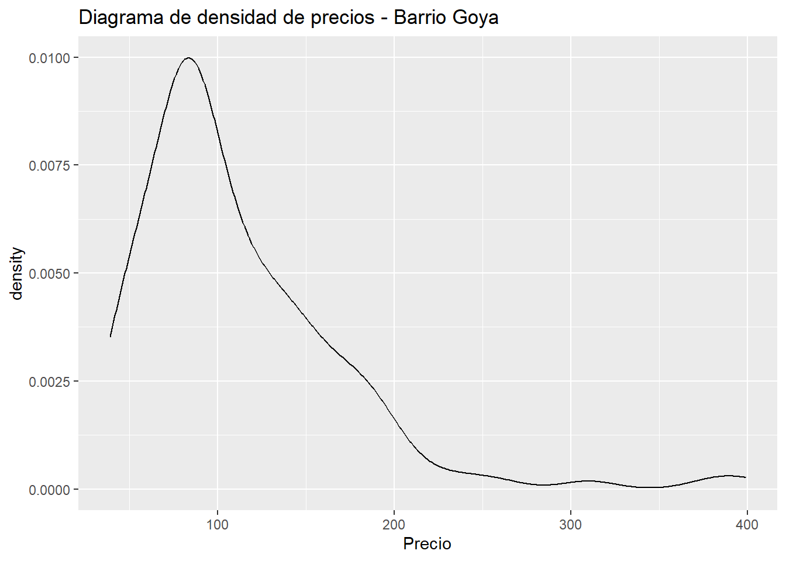
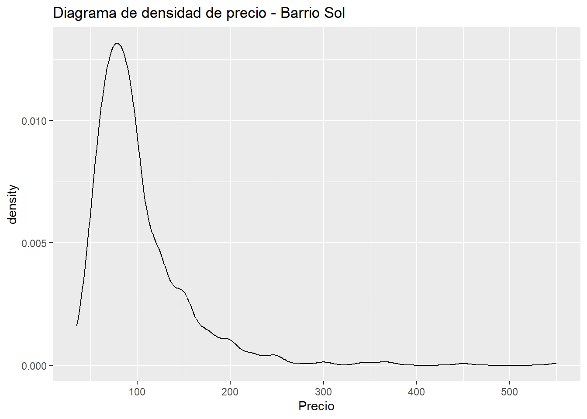

library(ggplot2)
library(magrittr)Cargar los datos en un dataframe llamado: airbnb
airbnb<-read.csv('data//airbnb.csv',sep = ',', stringsAsFactors = T)Mostrar las primeras 6 filas del dataframe
head(airbnb) Zipcode Neighbourhood.Cleansed Property.Type Room.Type Accommodates
1 28004 Universidad Apartment Private room 2
2 28004 Universidad Apartment Entire home/apt 6
3 28004 Universidad Apartment Entire home/apt 3
4 28004 Universidad Loft Entire home/apt 3
5 28015 Universidad Apartment Entire home/apt 5
6 28004 Universidad Apartment Entire home/apt 2
Bathrooms Bedrooms Beds Bed.Type
1 2 1 1 Real Bed
2 1 3 5 Real Bed
3 1 2 2 Real Bed
4 2 1 1 Real Bed
5 1 1 1 Real Bed
6 1 0 1 Real Bed
Amenities
1 TV,Wireless Internet,Kitchen,Pets allowed,Pets live on this property,Buzzer/wireless intercom,Heating,Suitable for events,Washer,First aid kit,Essentials,Lock on bedroom door,Iron
2 TV,Internet,Wireless Internet,Air conditioning,Kitchen,Indoor fireplace,Heating,Family/kid friendly,Washer,Dryer,Smoke detector,Carbon monoxide detector,Essentials,Shampoo
3 TV,Internet,Wireless Internet,Air conditioning,Kitchen,Doorman,Heating,Family/kid friendly,Washer,Essentials,Shampoo,Hangers,Hair dryer,Iron,Laptop friendly workspace
4 TV,Internet,Wireless Internet,Air conditioning,Kitchen,Pets allowed,Breakfast,Elevator in building,Indoor fireplace,Buzzer/wireless intercom,Heating,Washer,Essentials,Shampoo,Hangers,Hair dryer,Iron,Laptop friendly workspace,translation missing: en.hosting_amenity_49,translation missing: en.hosting_amenity_50
5 TV,Wireless Internet,Air conditioning,Kitchen,Smoking allowed,Pets allowed,Elevator in building,Heating,Family/kid friendly,Washer,Essentials,Iron
6 TV,Cable TV,Internet,Wireless Internet,Air conditioning,Wheelchair accessible,Kitchen,Doorman,Elevator in building,Buzzer/wireless intercom,Heating,Washer,Smoke detector,Carbon monoxide detector,First aid kit,Safety card,Fire extinguisher,Essentials,Shampoo,24-hour check-in,Hangers,Hair dryer,Iron,Laptop friendly workspace,Self Check-In,Doorman Entry
Square.Feet Price Review.Scores.Rating
1 NA 35 NA
2 NA 92 96
3 NA 55 91
4 NA 60 100
5 538 75 90
6 NA 55 95Renombrar las columnas de la siguiente forma:
| Nombre original | Nuevo nombre |
|---|---|
| Zipcode | CodigoPostal |
| Neighbourhood.Cleansed | Barrio |
| Property.Type | TipoPropiedad |
| Room.Type | TipoAlquiler |
| Accommodates | MaxOcupantes |
| Bathrooms | NumBanyos |
| Bedrooms | NumDormitorios |
| Beds | NumCamas |
| Bed.Type | TipoCama |
| Amenities | Comodidades |
| Square.Feet | PiesCuadrados |
| Price | Precio |
| Review.Scores.Rating | Puntuacion |
colnames(airbnb)<-c("CodigoPostal","Barrio","TipoPropiedad","TipoAlquiler","MaxOcupantes","NumBanyos",
"NumDormitorios","NumCamas","TipoCama","Comodidades","PiesCuadrados","Precio","Puntuacion")
colnames(airbnb) [1] "CodigoPostal" "Barrio" "TipoPropiedad" "TipoAlquiler"
[5] "MaxOcupantes" "NumBanyos" "NumDormitorios" "NumCamas"
[9] "TipoCama" "Comodidades" "PiesCuadrados" "Precio"
[13] "Puntuacion" Crea una nueva columna llamada MetrosCuadrados a partir de la columna PiesCuadrados.
Ayuda: 1 pie cuadrado son 0,092903 metros cuadrdados
airbnb$MetrosCuadrados <- airbnb$PiesCuadrados*0.092903
head(airbnb) CodigoPostal Barrio TipoPropiedad TipoAlquiler MaxOcupantes NumBanyos
1 28004 Universidad Apartment Private room 2 2
2 28004 Universidad Apartment Entire home/apt 6 1
3 28004 Universidad Apartment Entire home/apt 3 1
4 28004 Universidad Loft Entire home/apt 3 2
5 28015 Universidad Apartment Entire home/apt 5 1
6 28004 Universidad Apartment Entire home/apt 2 1
NumDormitorios NumCamas TipoCama
1 1 1 Real Bed
2 3 5 Real Bed
3 2 2 Real Bed
4 1 1 Real Bed
5 1 1 Real Bed
6 0 1 Real Bed
Comodidades
1 TV,Wireless Internet,Kitchen,Pets allowed,Pets live on this property,Buzzer/wireless intercom,Heating,Suitable for events,Washer,First aid kit,Essentials,Lock on bedroom door,Iron
2 TV,Internet,Wireless Internet,Air conditioning,Kitchen,Indoor fireplace,Heating,Family/kid friendly,Washer,Dryer,Smoke detector,Carbon monoxide detector,Essentials,Shampoo
3 TV,Internet,Wireless Internet,Air conditioning,Kitchen,Doorman,Heating,Family/kid friendly,Washer,Essentials,Shampoo,Hangers,Hair dryer,Iron,Laptop friendly workspace
4 TV,Internet,Wireless Internet,Air conditioning,Kitchen,Pets allowed,Breakfast,Elevator in building,Indoor fireplace,Buzzer/wireless intercom,Heating,Washer,Essentials,Shampoo,Hangers,Hair dryer,Iron,Laptop friendly workspace,translation missing: en.hosting_amenity_49,translation missing: en.hosting_amenity_50
5 TV,Wireless Internet,Air conditioning,Kitchen,Smoking allowed,Pets allowed,Elevator in building,Heating,Family/kid friendly,Washer,Essentials,Iron
6 TV,Cable TV,Internet,Wireless Internet,Air conditioning,Wheelchair accessible,Kitchen,Doorman,Elevator in building,Buzzer/wireless intercom,Heating,Washer,Smoke detector,Carbon monoxide detector,First aid kit,Safety card,Fire extinguisher,Essentials,Shampoo,24-hour check-in,Hangers,Hair dryer,Iron,Laptop friendly workspace,Self Check-In,Doorman Entry
PiesCuadrados Precio Puntuacion MetrosCuadrados
1 NA 35 NA NA
2 NA 92 96 NA
3 NA 55 91 NA
4 NA 60 100 NA
5 538 75 90 49.98181
6 NA 55 95 NAMiremos el código postal. Es una variable con entradas erroneas. Hay valores como ’‘,’-’ y ‘28’ que deberían ser considerados como NA. Así mismo también debería ser NA todos los que no compiencen por 28, ya que estamos con códigos postales de Madrid
El código postal 28002, 28004 y 28051 tienen entradas repetidas. Por ejemplo las entradas 28002 deberían ir dentro de 28002
El codigo 2804 debería ser 28004, 2805 deberia ser 28005 y 2815 juncto con 2815 debería ser 28015
Limpia los datos de la columna Codigo Postal
airbnb$CodigoPostal <- replace(airbnb$CodigoPostal, airbnb$CodigoPostal == '' | airbnb$CodigoPostal == '-' | airbnb$CodigoPostal == '28', NA)
airbnb$CodigoPostal <- as.character(airbnb$CodigoPostal)
airbnb$CodigoPostal <- gsub("\n.*", "", airbnb$CodigoPostal)
airbnb$CodigoPostal <- replace(airbnb$CodigoPostal, airbnb$CodigoPostal == "2804", "28004")
airbnb$CodigoPostal <- replace(airbnb$CodigoPostal, airbnb$CodigoPostal == "2805", "28005")
airbnb$CodigoPostal <- replace(airbnb$CodigoPostal, airbnb$CodigoPostal == "2815", "28015")
airbnb$CodigoPostal <- replace(airbnb$CodigoPostal, airbnb$CodigoPostal == "280013", "28013")
airbnb$CodigoPostal <- gsub("^Madrid\\s+", "", airbnb$CodigoPostal)
airbnb$CodigoPostal <- replace(airbnb$CodigoPostal, !grepl("^28", airbnb$CodigoPostal), NA)Una vez limpios los datos ¿Cuales son los códigos postales que tenemos?
table(airbnb$CodigoPostal)
28001 28002 28003 28004 28005 28006 28007 28008 28009 28010 28011 28012 28013
231 171 185 1796 1195 218 206 338 216 384 250 2060 1020
28014 28015 28016 28017 28018 28019 28020 28021 28022 28023 28024 28025 28026
630 601 76 107 43 200 192 58 30 23 44 123 93
28027 28028 28029 28030 28031 28032 28033 28034 28035 28036 28037 28038 28039
122 263 110 73 27 33 89 45 59 67 65 77 160
28040 28041 28042 28043 28044 28045 28046 28047 28048 28049 28050 28051 28052
16 63 90 103 19 495 32 67 1 3 58 17 1
28053 28054 28055 28056 28058 28060 28094 28105 28850
85 12 12 1 1 1 1 1 1 ¿Cuales son los 5 códigos postales con más entradas? ¿Y con menos? ¿Cuantas entradas tienen?
#Códigos postales con más entradas
frecuencias <- table(airbnb$CodigoPostal)
frecuencias_ord <- sort(frecuencias, decreasing = TRUE)
head(frecuencias_ord, n = 5)
28012 28004 28005 28013 28014
2060 1796 1195 1020 630 #Códigos postales con menos entradas
frecuencias <- table(airbnb$CodigoPostal)
frecuencias_ord <- sort(frecuencias, decreasing = FALSE)
head(frecuencias_ord, n = 5)
28048 28052 28056 28058 28060
1 1 1 1 1 ¿Cuales son los barrios que hay en el código postal 28012?
airbnb_28012 <- subset(airbnb, CodigoPostal == "28012")
tabla_barrios <- table(airbnb_28012$Barrio)
barrios_28012 <- names(tabla_barrios[tabla_barrios > 0])
print(barrios_28012) [1] "Acacias" "Arapiles" "Atocha" "Cortes"
[5] "Delicias" "Embajadores" "Goya" "Palacio"
[9] "Palos de Moguer" "Sol" "Universidad" ¿Cuantas entradas hay en cada uno de esos barrios para el codigo postal 28012?
tabla_barrios <- table(airbnb_28012$Barrio)
tabla_barrios_df <- as.data.frame(tabla_barrios)
names(tabla_barrios_df) <- c("Barrio", "Entradas")
tabla_barrios_filtrada <- subset(tabla_barrios_df, Entradas > 0)
print(tabla_barrios_filtrada) Barrio Entradas
2 Acacias 13
14 Arapiles 1
18 Atocha 1
41 Cortes 216
45 Delicias 1
49 Embajadores 1449
56 Goya 1
81 Palacio 27
85 Palos de Moguer 46
112 Sol 301
115 Universidad 4¿Cuantos barrios hay en todo el dataset airbnb? ¿Cuales son?
barrios_airbnb <- unique(airbnb$Barrio)
cat("Hay", length(barrios_airbnb), "barrios en el dataset airbnb.\n")Hay 125 barrios en el dataset airbnb.cat("\n")print(barrios_airbnb) [1] Universidad Sol
[3] Imperial Acacias
[5] Chopera Delicias
[7] Palos de Moguer Embajadores
[9] Cortes Atocha
[11] Pacífico Adelfas
[13] Estrella Ibiza
[15] Jerónimos Niño Jesús
[17] Palacio Justicia
[19] Recoletos Goya
[21] Fuente del Berro Arapiles
[23] Trafalgar Almagro
[25] Guindalera Lista
[27] Castellana El Viso
[29] Prosperidad Valverde
[31] Casa de Campo El Goloso
[33] Numancia Cármenes
[35] Puerta del Angel Lucero
[37] Aluche San Isidro
[39] Campamento Comillas
[41] Opañel Vista Alegre
[43] Ciudad Jardín Hispanoamérica
[45] Nueva España Castilla
[47] Bellas Vistas Cuatro Caminos
[49] Castillejos Vallehermoso
[51] Almenara Valdeacederas
[53] Berruguete Gaztambide
[55] Rios Rosas Peñagrande
[57] Argüelles Puerta Bonita
[59] Buenavista Abrantes
[61] Orcasur San Fermín
[63] Almendrales Pradolongo
[65] Portazgo Entrevías
[67] San Diego Palomeras Bajas
[69] Fontarrón Vinateros
[71] Ventas Pueblo Nuevo
[73] Quintana Concepción
[75] San Juan Bautista Costillares
[77] Piovera Canillas
[79] Pinar del Rey Apostol Santiago
[81] San Andrés Valdefuentes
[83] Butarque Los Angeles
[85] Casco Histórico de Vicálvaro Simancas
[87] Rejas Salvador
[89] Casco Histórico de Barajas Pilar
[91] La Paz Mirasierra
[93] Ciudad Universitaria Moscardó
[95] Palomeras Sureste Marroquina
[97] Media Legua Los Rosales
[99] Casco Histórico de Vallecas Timón
[101] Corralejos Cuatro Vientos
[103] Colina San Cristobal
[105] Alameda de Osuna Aeropuerto
[107] Palomas Zofío
[109] Aguilas Legazpi
[111] Fuentelareina Aravaca
[113] Ambroz Canillejas
[115] Valdezarza Amposta
[117] San Pascual Santa Eugenia
[119] Arcos Rosas
[121] Valdemarín El Plantío
[123] Hellín Pavones
[125] Orcasitas
125 Levels: Abrantes Acacias Adelfas Aeropuerto Aguilas ... Zofío¿Cuales son los 5 barrios que tienen mayor número entradas?
mas_entradas_airbnb <- table(airbnb$Barrio)
entradas_ord <- sort(mas_entradas_airbnb, decreasing = TRUE)
head(entradas_ord, n = 5)
Embajadores Universidad Palacio Sol Justicia
1844 1358 1083 940 785 ¿Cuantos Tipos de Alquiler diferentes hay? ¿Cuales son? ¿Cuantas entradas en el dataframe hay por cada tipo?
table(airbnb$TipoAlquiler)
Entire home/apt Private room Shared room
7903 5113 191 Muestra el diagrama de cajas del precio para cada uno de los diferentes Tipos de Alquiler
library(ggplot2)
ggplot(airbnb, aes(x = TipoAlquiler, y = Precio)) +
geom_boxplot() +
labs(title = "Precio - Tipo de Alquiler", x = "Tipo de alquiler", y = "Precio")+
scale_y_continuous(breaks = seq(0, 1000, by = 50))Warning: Removed 9 rows containing non-finite values (`stat_boxplot()`).Cual es el precio medio de alquiler de cada uno, la diferencia que hay ¿es estadísticamente significativa? ¿Con que test lo comprobarías?
library(dplyr)
Attaching package: 'dplyr'The following objects are masked from 'package:stats':
filter, lagThe following objects are masked from 'package:base':
intersect, setdiff, setequal, union#Calculando el precio medio de alquiler de cada TipoAlquiler
airbnb %>%
group_by(TipoAlquiler) %>%
summarize(PrecioMedio = mean(Precio, na.rm = TRUE))# A tibble: 3 × 2
TipoAlquiler PrecioMedio
<fct> <dbl>
1 Entire home/apt 87.3
2 Private room 34.3
3 Shared room 29.9for (v in levels(airbnb$TipoAlquiler)){
print(paste("Tipo de alquiler:", v, "pvalue,",
shapiro.test(head(airbnb$Precio[airbnb$TipoAlquiler==v], 5000))$p.value))
}[1] "Tipo de alquiler: Entire home/apt pvalue, 1.24077898621874e-72"
[1] "Tipo de alquiler: Private room pvalue, 9.18974842339072e-85"
[1] "Tipo de alquiler: Shared room pvalue, 4.51672121600842e-24"kruskal.test(Precio ~ TipoAlquiler, data = airbnb)
Kruskal-Wallis rank sum test
data: Precio by TipoAlquiler
Kruskal-Wallis chi-squared = 7235.6, df = 2, p-value < 2.2e-16Filtra el dataframe cuyos tipo de alquiler sea ‘Entire home/apt’ y guardalo en un dataframe llamado airbnb_entire. Estas serán las entradas que tienen un alquiler del piso completo.
airbnb_entire <- subset(airbnb, TipoAlquiler == "Entire home/apt")
head(airbnb_entire) CodigoPostal Barrio TipoPropiedad TipoAlquiler MaxOcupantes NumBanyos
2 28004 Universidad Apartment Entire home/apt 6 1
3 28004 Universidad Apartment Entire home/apt 3 1
4 28004 Universidad Loft Entire home/apt 3 2
5 28015 Universidad Apartment Entire home/apt 5 1
6 28004 Universidad Apartment Entire home/apt 2 1
8 28004 Universidad Apartment Entire home/apt 3 1
NumDormitorios NumCamas TipoCama
2 3 5 Real Bed
3 2 2 Real Bed
4 1 1 Real Bed
5 1 1 Real Bed
6 0 1 Real Bed
8 1 NA Real Bed
Comodidades
2 TV,Internet,Wireless Internet,Air conditioning,Kitchen,Indoor fireplace,Heating,Family/kid friendly,Washer,Dryer,Smoke detector,Carbon monoxide detector,Essentials,Shampoo
3 TV,Internet,Wireless Internet,Air conditioning,Kitchen,Doorman,Heating,Family/kid friendly,Washer,Essentials,Shampoo,Hangers,Hair dryer,Iron,Laptop friendly workspace
4 TV,Internet,Wireless Internet,Air conditioning,Kitchen,Pets allowed,Breakfast,Elevator in building,Indoor fireplace,Buzzer/wireless intercom,Heating,Washer,Essentials,Shampoo,Hangers,Hair dryer,Iron,Laptop friendly workspace,translation missing: en.hosting_amenity_49,translation missing: en.hosting_amenity_50
5 TV,Wireless Internet,Air conditioning,Kitchen,Smoking allowed,Pets allowed,Elevator in building,Heating,Family/kid friendly,Washer,Essentials,Iron
6 TV,Cable TV,Internet,Wireless Internet,Air conditioning,Wheelchair accessible,Kitchen,Doorman,Elevator in building,Buzzer/wireless intercom,Heating,Washer,Smoke detector,Carbon monoxide detector,First aid kit,Safety card,Fire extinguisher,Essentials,Shampoo,24-hour check-in,Hangers,Hair dryer,Iron,Laptop friendly workspace,Self Check-In,Doorman Entry
8 TV,Wireless Internet,Air conditioning,Kitchen,Elevator in building,Buzzer/wireless intercom,Heating,Washer
PiesCuadrados Precio Puntuacion MetrosCuadrados
2 NA 92 96 NA
3 NA 55 91 NA
4 NA 60 100 NA
5 538 75 90 49.98181
6 NA 55 95 NA
8 NA 70 84 NA¿Cuales son los 5 barrios que tienen un mayor número de apartamentos enteros en alquiler? Nota: Mirar solo en airbnb_entire. A partir de este punto y hasta que se diga lo contrario partiremos de airbnb_entire.
airbnb_entire <- subset(airbnb, TipoAlquiler == "Entire home/apt")
apartamentos_enteros <- table(airbnb_entire$Barrio)
top_5_barrios <- head(sort(apartamentos_enteros, decreasing = TRUE), 5)
print(top_5_barrios)
Embajadores Universidad Palacio Sol Cortes
1228 984 769 701 574 ¿Cuales son los 5 barrios que tienen un mayor precio medio de alquiler para apartamentos enteros (es decir, del dataframe airbnb_entire)?
¿Cual es su precio medio?
Ayuda: Usa la función aggregate aggregate(.~colname,df,mean,na.rm=TRUE)
precio_medio <- aggregate(Precio ~ Barrio, data = airbnb_entire, FUN = mean, na.rm = TRUE)
precio_medio_ord <- precio_medio[order(precio_medio$Precio, decreasing = TRUE), ]
head(precio_medio_ord, n = 5) Barrio Precio
77 Palomas 309.7500
50 Fuentelareina 180.0000
93 Recoletos 161.9254
43 El Plantío 150.0000
30 Castellana 141.3889¿Cuantos apartamentos hay en cada uno de esos barrios?
airbnb_entire <- subset(airbnb_entire, Barrio %in% c('Palomas', 'Fuentelareina', 'Recoletos', 'El Plantío', 'Castellana') & TipoPropiedad == 'Apartment')
num_apartments <- table(airbnb_entire$Barrio)
num_apartments <- num_apartments[names(num_apartments) %in% c('Palomas', 'Fuentelareina', 'Recoletos', 'El Plantío', 'Castellana')]
df_num_apartments <- data.frame(Barrio = names(num_apartments), Num_Apartments = as.vector(num_apartments))
print(df_num_apartments) Barrio Num_Apartments
1 Castellana 66
2 El Plantío 0
3 Fuentelareina 1
4 Palomas 2
5 Recoletos 122Mostrar una dataframe con el nombre del barrio, el precio y el número de entradas.
Ayuda: Podeis crear un nuevo dataframe con las columnas “Barrio” y “Freq” que contenga el número de entradas en cada barrio y hacer un merge con el dataframe del punto anterior.
nuevo_df <- merge(df_num_apartments, precio_medio_ord, by = "Barrio")
print(nuevo_df) Barrio Num_Apartments Precio
1 Castellana 66 141.3889
2 El Plantío 0 150.0000
3 Fuentelareina 1 180.0000
4 Palomas 2 309.7500
5 Recoletos 122 161.9254Partiendo del dataframe anterior, muestra los 5 barrios con mayor precio, pero que tengan más de 100 entradas de alquiler.
library(dplyr)
airbnb_entire <- subset(airbnb, TipoAlquiler == "Entire home/apt")
airbnb_entire_filtrado <- airbnb_entire %>%
group_by(Barrio) %>%
summarize(num_registros = n()) %>%
filter(num_registros > 100) %>%
select(Barrio)
resultado <- airbnb_entire %>%
filter(Barrio %in% airbnb_entire_filtrado$Barrio & !is.na(Precio) & Precio != "") %>%
group_by(Barrio) %>%
summarize(precio_medio = mean(as.numeric(Precio)), num_entradas = n()) %>%
arrange(desc(precio_medio)) %>%
slice(1:5)
print(resultado)# A tibble: 5 × 3
Barrio precio_medio num_entradas
<fct> <dbl> <int>
1 Recoletos 162. 134
2 Goya 111. 142
3 Sol 101. 701
4 Trafalgar 98.6 223
5 Justicia 98.3 534Dibuja el diagrama de densidad de distribución de los diferentes precios. Serían 5 gráficas, una por cada barrio.
# Diagrama de densidad de precios del barrio Recoletos:
airbnb_recoletos <- airbnb_entire[airbnb_entire$Barrio == "Recoletos", ]
ggplot(airbnb_recoletos, aes(x = Precio)) +
geom_density() +
labs(title = "Diagrama de densidad de precios - Barrio Recoletos")Warning: Removed 1 rows containing non-finite values (`stat_density()`).# Diagrama de densidad de precios del barrio Goya:
airbnb_goya <- airbnb_entire[airbnb_entire$Barrio == "Goya", ]
ggplot(airbnb_goya, aes(x = Precio)) +
geom_density() +
labs(title = "Diagrama de densidad de precios - Barrio Goya")
# Diagrama de densidad de precios del barrio Sol:
airbnb_sol <- airbnb_entire[airbnb_entire$Barrio == "Sol", ]
ggplot(airbnb_sol, aes(x = Precio)) +
geom_density() +
labs(title = "Diagrama de densidad de precio - Barrio Sol")
# Diagrama de densidad de precio del barrio Trafalgar:
airbnb_trafalgar <- airbnb_entire[airbnb_entire$Barrio == "Trafalgar", ]
ggplot(airbnb_trafalgar, aes(x = Precio)) +
geom_density() +
labs(title = "Diagrama de densidad de precio - Barrio Trafalgar")# Diagrama de densidad de precio del barrio Justicia:
airbnb_justicia <- airbnb_entire[airbnb_entire$Barrio == "Justicia", ]
ggplot(airbnb_justicia, aes(x = Precio)) +
geom_density() +
labs(title = "Diagrama de densidad de precio - Barrio Justicia")Calcula el tamaño medio, en metros cuadrados, para los 5 barrios anteriores y muestralo en el mismo dataframe junto con el precio y número de entradas
barrios <- c("Recoletos", "Goya", "Justicia", "Sol", "Trafalgar")
metros_cuadrados_medio <- airbnb_entire %>%
filter(Barrio %in% barrios) %>%
group_by(Barrio) %>%
summarize(metros_cuadrados_medio = mean(ifelse(is.na(MetrosCuadrados), mean(MetrosCuadrados, na.rm = TRUE), MetrosCuadrados)))
airbnb_5barrios_100 <- merge(resultado, metros_cuadrados_medio, by = "Barrio")
airbnb_5barrios_100 Barrio precio_medio num_entradas metros_cuadrados_medio
1 Goya 111.33803 142 51.68504
2 Justicia 98.25468 534 28.52669
3 Recoletos 161.92537 134 26.66316
4 Sol 100.75036 701 45.61692
5 Trafalgar 98.57848 223 29.30426Dibuja el diagrama de densidad de distribución de los diferentes tamaños de apartamentos. Serían 5 gráficas, una por cada barrio.
# Diagrama de densidad de tamaños de apartamentos del barrio Recoletos:
ggplot(airbnb_recoletos, aes(x = MetrosCuadrados)) +
geom_density() +
labs(title = "Tamaños de apartamentos - Barrio Recolectos")Warning: Removed 132 rows containing non-finite values (`stat_density()`).# Diagrama de densidad de tamaños de apartamentos del barrio Goya:
ggplot(airbnb_goya, aes(x = MetrosCuadrados)) +
geom_density() +
labs(title = "Tamaños de apartamentos - Barrio Goya")Warning: Removed 139 rows containing non-finite values (`stat_density()`).
# Diagrama de densidad de tamaños de apartamentos del barrio Sol:
ggplot(airbnb_sol, aes(x = MetrosCuadrados)) +
geom_density() +
labs(title = "Tamaños de apartamentos - Barrio Sol")Warning: Removed 641 rows containing non-finite values (`stat_density()`).# Diagrama de densidad de tamaños de apartamentos del barrio Trafalgar:
ggplot(airbnb_trafalgar, aes(x = MetrosCuadrados)) +
geom_density() +
labs(title = "Tamaños de apartamentos - Barrio Trafalgar")Warning: Removed 216 rows containing non-finite values (`stat_density()`).# Diagrama de densidad de tamaños de apartamentos del barrio Justicia:
ggplot(airbnb_justicia, aes(x = MetrosCuadrados)) +
geom_density() +
labs(title = "Tamaños de apartamentos - Barrio Justicia")Warning: Removed 517 rows containing non-finite values (`stat_density()`).Esta claro que las medias de metros cuadrados de cada uno de estos 5 barrios parecen ser diferentes, pero ¿son estadísticamente diferentes? ¿Que test habría que usar para comprobarlo?
goya_m2 <- na.omit(airbnb_entire[airbnb_entire$Barrio == "Goya", "MetrosCuadrados"])
justicia_m2 <- na.omit(airbnb_entire[airbnb_entire$Barrio == "Justicia", "MetrosCuadrados"])
recoletos_m2 <- na.omit(airbnb_entire[airbnb_entire$Barrio == "Recoletos", "MetrosCuadrados"])
sol_m2 <- na.omit(airbnb_entire[airbnb_entire$Barrio == "Sol", "MetrosCuadrados"])
trafalgar_m2 <- na.omit(airbnb_entire[airbnb_entire$Barrio == "Trafalgar", "MetrosCuadrados"])
shapiro.test(justicia_m2)
Shapiro-Wilk normality test
data: justicia_m2
W = 0.76212, p-value = 0.0006419shapiro.test(recoletos_m2)
Shapiro-Wilk normality test
data: recoletos_m2
W = 0.75, p-value < 2.2e-16shapiro.test(sol_m2)
Shapiro-Wilk normality test
data: sol_m2
W = 0.83089, p-value = 8.691e-07shapiro.test(trafalgar_m2)
Shapiro-Wilk normality test
data: trafalgar_m2
W = 0.75023, p-value = 0.01276kruskal.test(list(goya_m2, justicia_m2, recoletos_m2, sol_m2, trafalgar_m2))
Kruskal-Wallis rank sum test
data: list(goya_m2, justicia_m2, recoletos_m2, sol_m2, trafalgar_m2)
Kruskal-Wallis chi-squared = 1.882, df = 4, p-value = 0.7574Para únicamente los pisos de alquiler en el barrio de Sol:
barrio_sol<-subset(airbnb_entire,Barrio=="Sol")
Calcular un modelo lineal que combine alguna de estas variables: * NumBanyos * NumDormitorios * MaxOcupantes * MetrosCuadrados
Primero calculamos la correlación para ver como se relacionan estas variables entre sí.
barrio_sol<-subset(airbnb_entire,Barrio=="Sol")
barrio_sol_df <- barrio_sol[, c("NumBanyos", "NumDormitorios", "MaxOcupantes", "MetrosCuadrados")]
barrio_sol_df$MetrosCuadrados <- ifelse(is.na(barrio_sol_df$MetrosCuadrados), 0, barrio_sol_df$MetrosCuadrados)
cor(barrio_sol_df[, c("NumBanyos", "NumDormitorios", "MaxOcupantes", "MetrosCuadrados")]) NumBanyos NumDormitorios MaxOcupantes MetrosCuadrados
NumBanyos 1.0000000 0.6761906 0.6578162 0.1420426
NumDormitorios 0.6761906 1.0000000 0.7594598 0.1641938
MaxOcupantes 0.6578162 0.7594598 1.0000000 0.1584291
MetrosCuadrados 0.1420426 0.1641938 0.1584291 1.0000000Se observa que la correlación entre el número de dormitorios y los metros cuadrados es sorprendentemente baja. ¿Son de fiar esos números?
#La correlación entre número de dormitorios y metros cuadrados es de 0.1641938. Los números no son de fiar.Mediante un histograma o curvas de densidad podemos descartar números que notienen sentido en el dataframe barrio_sol, para tener una matriz de correlación que tenga mayor sentido.
#Boxplot de NumBanyos
ggplot(barrio_sol, aes(x=NumBanyos)) +
geom_histogram() +
scale_x_continuous(breaks = 1:10)`stat_bin()` using `bins = 30`. Pick better value with `binwidth`.#Boxplot de NumDormitorios
ggplot(barrio_sol, aes(x=NumDormitorios)) +
geom_histogram() +
scale_x_continuous(breaks = 1:10)`stat_bin()` using `bins = 30`. Pick better value with `binwidth`.#Boxplotde MaxOcupantes
ggplot(barrio_sol, aes(x=MaxOcupantes)) +
geom_histogram() +
scale_x_continuous(breaks = 1:20)`stat_bin()` using `bins = 30`. Pick better value with `binwidth`.#Boxplot de MetrosCuadrados
ggplot(barrio_sol, aes(x=MetrosCuadrados)) +
geom_histogram()`stat_bin()` using `bins = 30`. Pick better value with `binwidth`.Warning: Removed 641 rows containing non-finite values (`stat_bin()`).#Filtrando datos del dataframe barrio_sol
barrio_sol_filtrado <- filter(barrio_sol,
NumBanyos >= 1 & NumBanyos <= 3,
NumDormitorios >= 1 & NumDormitorios <= 4,
MaxOcupantes >= 1 & MaxOcupantes <= 8,
MetrosCuadrados >= 25 & MetrosCuadrados <= 200)
#Creando nueva matriz de correlación
variables <- c("NumBanyos", "NumDormitorios", "MaxOcupantes", "MetrosCuadrados")
cor_mat <- cor(barrio_sol_filtrado[, variables])
cor_mat NumBanyos NumDormitorios MaxOcupantes MetrosCuadrados
NumBanyos 1.0000000 0.5091751 0.5665577 0.7163933
NumDormitorios 0.5091751 1.0000000 0.7560635 0.7412231
MaxOcupantes 0.5665577 0.7560635 1.0000000 0.7900212
MetrosCuadrados 0.7163933 0.7412231 0.7900212 1.0000000Una vez que hayamos filtrado los datos correspondientes calcular el valor o la combinación de valores que mejor nos permite obtener el precio de un inmueble.
modelo <- lm(Precio ~ NumBanyos + NumDormitorios + MaxOcupantes + MetrosCuadrados, data = barrio_sol_filtrado)
summary(modelo)
Call:
lm(formula = Precio ~ NumBanyos + NumDormitorios + MaxOcupantes +
MetrosCuadrados, data = barrio_sol_filtrado)
Residuals:
Min 1Q Median 3Q Max
-32.501 -8.248 -2.498 15.860 22.841
Coefficients:
Estimate Std. Error t value Pr(>|t|)
(Intercept) 34.7477 15.4230 2.253 0.0397 *
NumBanyos 15.8616 18.5577 0.855 0.4062
NumDormitorios 22.2516 13.8737 1.604 0.1296
MaxOcupantes 7.2323 4.5457 1.591 0.1325
MetrosCuadrados -0.3327 0.3867 -0.860 0.4031
---
Signif. codes: 0 '***' 0.001 '**' 0.01 '*' 0.05 '.' 0.1 ' ' 1
Residual standard error: 17.35 on 15 degrees of freedom
Multiple R-squared: 0.5758, Adjusted R-squared: 0.4627
F-statistic: 5.091 on 4 and 15 DF, p-value: 0.008559¿Que variable es más fiable para conocer el precio de un inmueble, el número de habitaciones o los metros cuadrados?
#Es más fiable el NumDormitorios ya que tiene un Coeficiente de 22.2516, mientras MetrosCuadrados tiene un coeficiente de -0.3327.Responde con su correspondiente margen de error del 95%, ¿cuantos euros incrementa el precio del alquiler por cada metro cuadrado extra del piso?
confint(modelo)["MetrosCuadrados", ] 2.5 % 97.5 %
-1.1570313 0.4915627 Responde con su correspondiente margen de error del 95%, ¿cuantos euros incrementa el precio del alquiler por cada habitación?
confint(modelo)["NumDormitorios", ] 2.5 % 97.5 %
-7.319635 51.822747 ¿Cual es la probabilidad de encontrar, en el barrio de Sol, un apartamento en alquiler con 3 dormitorios? ¿Cual es el intervalo de confianza de esa probabilidad?
total_apartamentos <- nrow(barrio_sol)
apartamentos_3_dormitorios <- sum(barrio_sol$NumDormitorios == 3)
probabilidad_estimada <- apartamentos_3_dormitorios / total_apartamentos
cat("La probabilidad de encontrar un apartamento con 3 dormitorios en el barrio de Sol es:", probabilidad_estimada, "\n")La probabilidad de encontrar un apartamento con 3 dormitorios en el barrio de Sol es: 0.07845934 intervalo_confianza <- binom.test(x = apartamentos_3_dormitorios, n = total_apartamentos, conf.level = 0.95)
cat("El intervalo de confianza del 95% para la probabilidad de encontrar un apartamento con 3 dormitorios es:",
intervalo_confianza$conf.int, "\n")El intervalo de confianza del 95% para la probabilidad de encontrar un apartamento con 3 dormitorios es: 0.0596506 0.1009033